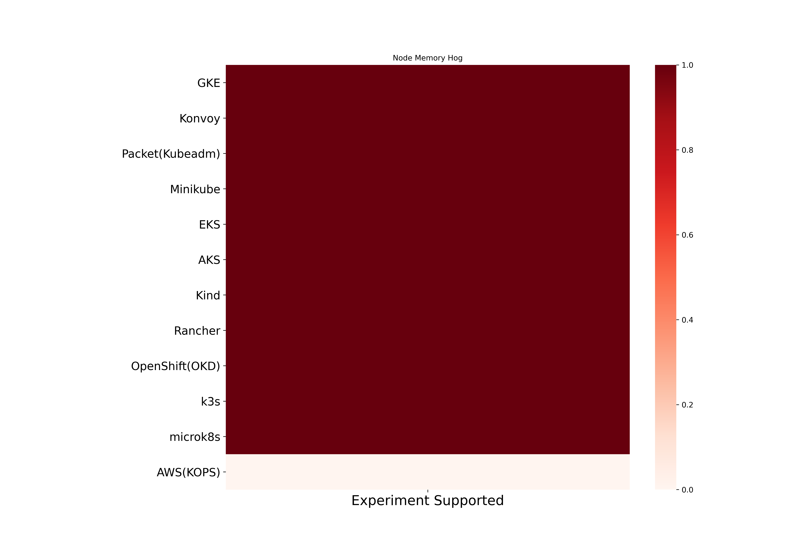

Node Memory Hog Chaos
Node Memory Hog exhaust memory resources on the kubernetes node. Here are the different coverage metrics for the experiment.
Node Memory Hog experiment based coverage
Node Memory Hog cluster runtime based coverage
Node Memory Hog platform based coverage
